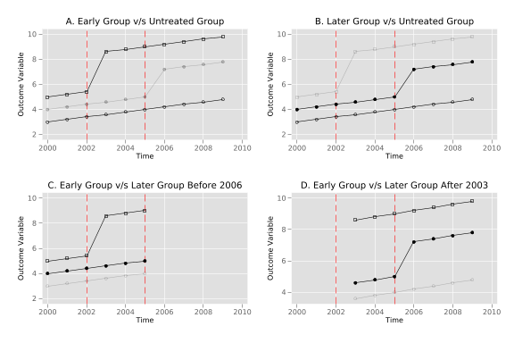
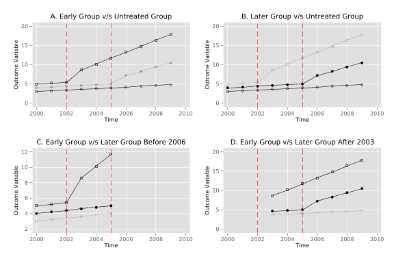
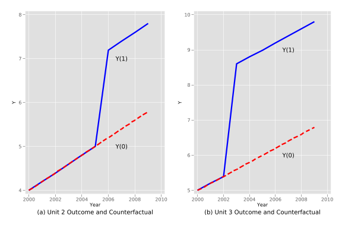

Two-Way Fixed Effects Estimators and Heterogeneous Treatment Effects To understand the potential issues related to heterogeneous treatment effects over time and two-way fixed effect estimators, we will examine a pair of numerical examples. In particular, we will focus on the composition of the two way FE estimator \(\tau\) estimated from: \[
y_{st} = \gamma_s + \lambda_t + \tau w_{st} + \varepsilon_{st}
\tag{10.1}\] where \(y_{st}\) is the outcome variable, \(\gamma_s\) and \(\lambda_t\) are state (unit) and time fixed effects, \(w_{st}\) is the binary treatment variable that takes the value of 1 if a state (unit) \(s\) is treated at time \(t\) and otherwise takes 0. We will work with a quite tractable example based on three units and 10 time periods, and will document how the approaches taken by Goodman-Bacon (2021) and by Chaisemartin and D’Haultfoeuille (2020) to understand the two-way FE estimator compare.
The results from Goodman-Bacon (2021) and those from Chaisemartin and D’Haultfoeuille (2020) are similar, however they take quite different paths to get there. Goodman-Bacon’s (like that laid out in Athey and Imbens (2022)) is “mechanical” in that it is based on the underlying difference-in-differences comparisons between all groups. The result in Chaisemartin and D’Haultfoeuille (2020) is based on a potential outcomes frame-work, and counterfactuals under parallel trend assumptions. Thus to examine how these methods work requires somewhat different frameworks. In the case of Goodman-Bacon (2021), we should consider all possible DD comparisons, while in the case of Chaisemartin and D’Haultfoeuille (2020) we should consider the treatment effect for each unit and time period, which requires knowing the observed and counterfactual state. While the approaches the two papers take to understand the content of the estimator differ, they refer to the same estimator, so always recover the same parameter estimate. To examine this in a more applied way, we will look at a simulated example.
To do this, let’s consider a panel of 3 states/areas over the 10 years (\(t\)) of 2000 to 2009. One of these units is entirely untreated (\(unit = 1\) or group \(U\)), one is treated at an early time period, 2003, (\(unit = 2\) or group \(k\)), and the other is treated at a later time period, 2006, (\(unit = 3\) or group \(l\)). We will construct a general structure for this data below:
Number of observations (_N) was 0, now 30.
+-------------------+
| obs unit year |
|-------------------|
1. | 1 1 2000 |
2. | 2 1 2001 |
3. | 3 1 2002 |
4. | 4 1 2003 |
5. | 5 1 2004 |
+-------------------+
We will consider a simple-case where the actual data-generating process is known as: \[y_{unit,t} = 2 + 0.2 \times (t - 2000) + 1 \times unit + \beta_1 \times post \times unit + \beta_2 \times post \times unit \times (t - treat).\] Here \(unit\) refers to the unit number listed above (1, 2 or 3), \(post\) indicates that a unit is receiving treatment in the relevant time period \(t\), and \(treat\) refers to the treatment period (2003 for unit 2, and 2006 for unit 3). Let’s generate treatment, time to treatment, and post-treatment variables in Stata:
gen treat = 2006 if unit==2replace treat = 2003 if unit==3gen time = year - treatgenpost = time>=0 & time!=.replace treat = 0 if treat==.replace time = 0 if time==.replacepost = 0 ifpost==.listin 1/5
(20 missing values generated)
(10 real changes made)
(10 missing values generated)
(10 real changes made)
(10 real changes made)
(0 real changes made)
+-----------------------------------------+
| obs unit year treat time post |
|-----------------------------------------|
1. | 1 1 2000 0 0 0 |
2. | 2 1 2001 0 0 0 |
3. | 3 1 2002 0 0 0 |
4. | 4 1 2003 0 0 0 |
5. | 5 1 2004 0 0 0 |
+-----------------------------------------+
This specification allows for each unit to have its own fixed effect, given that \(unit\) is multiplied by 1, and allows for a general time trend increasing by 0.2 units each period across the whole sample. These parameters are not so important, as what we care about are the treatment effects themselves. The impact of treatment comes from the units \(\beta_1\) and \(\beta_2\). The first of these, \(\beta_1\), captures an immediate unit-specific jump when treatment is implemented which remains stable over time. The second of these, \(\beta_2\), implies a trend break occurring only for the treated units once treatment comes into place. We will consider 2 cases below. In the first case \(\beta_1 = 1\) and \(\beta_2 = 0\) (a simple case with a constant treatment effect per unit):
gen y1 = 2 + (year - 2000) * 0.2 + 1 * unit + 1 * post * unit + 0 * post * unit * timelistin 1/5
These two cases are plotted next where the line with empty circles refers to group \(U\), the line with black filled circles refers to group \(k\) and the line with squares refers to group \(l\)
First we will estimate the parameter by two-way fixed effects regression. This will provide us with the parameter estimate that both Goodman-Bacon (2021) and Chaisemartin and D’Haultfoeuille (2020) will construct in a piece-wise fashion. This is done relatively simply in R. We simply estimate Equation eq-twfe by linear regression using lm as laid out below:
quireg y1 i.unit i.yearpostdiastext"The parameter estimates by two-way fixed effects regression for the case 1 is: " _b[post]quireg y2 i.unit i.yearpostdiastext"The parameter estimates by two-way fixed effects regression for the case 2 is: " _b[post]
The parameter estimates by two-way fixed effects regression for the case 1 is:
> 2.4545456
The parameter estimates by two-way fixed effects regression for the case 2 is:
> 3.8045454
Here we see that the coefficient of interest is 2.454545. We can see that this is between the two unit-specific jumps that occur with treatment (2 and 3). We will see below why it takes this particular weighted average.
Using the values simulated above, let’s see how the Goodman-Bacon (2021) decomposition allows us to understand estimated treatment effects. We will consider both:
- (a) Simple Decomposition
- (b) Decomposition with trends
The methodology Goodman-Bacon (2021) decomposition suggests that we should calculate all \(2 \times 2\) combinations of states and time where post-treatment units are compared to “untreated” unit (laid out at more length in the boo). In this example, this provides four specific effects, which contribute to \(\widehat{\tau}\) as a weighted mean. The specific effects desired are:
A. \(\widehat{\beta}^{2\times2}_{kU}\) from the comparison of the early treated unit with the untreated unit.
B. \(\widehat{\beta}^{2\times2}_{lU}\), from the comparison of the latter treated unit with the untreated unit.
C. \(\widehat{\beta}^{2\times2,k}_{kl}\), from the comparison of the early and latter treated units, when the early unit begin to be treated.
D. \(\widehat{\beta}^{2\times2,l}_{kl}\), from the comparison of the early and latter treated units, when the latter unit begin to be treated.
These will then be weighted as laid out in Goodman-Bacon (2021) to provide the regression-based estimate.
(a) Simple Decomposition
In this case the Goodman-Bacon (2021) methodology estimate \(\widehat{\tau}\) weighting the next four DD comparisons
Show the plot code
twoway connected y1 yearif unit == 1, msymbol(Oh) mcolor(black) lcolor(black) || connected y1 yearif unit == 2, msymbol(O) mcolor(black%20) lcolor(black%20) || connected y1 yearif unit == 3, msymbol(Sh) mcolor(black) lcolor(black) ||, ytitle("Outcome Variable") xtitle("Time") title("A. Early Group v/s Untreated Group") legend(off) scheme(plottig) xline(2002, lpattern(dash) lcolor(red)) xline(2005, lpattern(dash) lcolor(red)) name(PanelA, replace)twoway connected y1 yearif unit == 1, msymbol(Oh) mcolor(black) lcolor(black) || connected y1 yearif unit == 2, msymbol(O) mcolor(black) lcolor(black) || connected y1 yearif unit == 3, msymbol(Sh) mcolor(black%20) lcolor(black%20) ||, ytitle("Outcome Variable") xtitle("Time") title("B. Later Group v/s Untreated Group") legend(off) scheme(plottig) xline(2002, lpattern(dash) lcolor(red)) xline(2005, lpattern(dash) lcolor(red)) name(PanelB, replace)twoway connected y1 yearif unit == 1 & year <= 2005, msymbol(Oh) mcolor(black%20) lcolor(black%20) || connected y1 yearif unit == 2 & year <= 2005, msymbol(O) mcolor(black) lcolor(black) || connected y1 yearif unit == 3 & year <= 2005, msymbol(Sh) mcolor(black) lcolor(black) ||, ytitle("Outcome Variable") xtitle("Time") title("C. Early Group v/s Later Group Before 2006") legend(off) scheme(plottig) xline(2002, lpattern(dash) lcolor(red)) xline(2005, lpattern(dash) lcolor(red)) xlabel(2000(2)2010) name(PanelC, replace)twoway connected y1 yearif unit == 1 & year >= 2003, msymbol(Oh) mcolor(black%20) lcolor(black%20) || connected y1 yearif unit == 2 & year >= 2003, msymbol(O) mcolor(black) lcolor(black) || connected y1 yearif unit == 3 & year >= 2003, msymbol(Sh) mcolor(black) lcolor(black) ||, ytitle("Outcome Variable") xtitle("Time") title("D. Early Group v/s Later Group After 2003") legend(off) scheme(plottig) xline(2002, lpattern(dash) lcolor(red)) xline(2005, lpattern(dash) lcolor(red)) xlabel(2000(2)2010) name(PanelD, replace)graphcombine PanelA PanelB PanelC PanelD, scheme(plottig)

Second Goodman-Bacon Graph
As seen in the plots, in the simple decomposition these effects are constants of 3 and 2 for early and later treated units given that the “treatment effect” is simply \(1 \times unit\) in each case.
A. Early Group v/s Untreated Group
In order to calculate the effects we start making the simple DD comparison of the untreated group \(U\) (\(unit = 1\)) with the early treated group \(k\) (\(unit = 3\)) getting \(\widehat{\beta}^{2 \times 2}_{kU}\) as \[\widehat{\beta}^{2 \times 2}_{kU} = \left( \overline{y}_k^{Post(k)} - \overline{y}_k^{Pre(k)} \right) - \left( \overline{y}_U^{Post(k)} - \overline{y}_U^{Pre(k)} \right)\] Where \(\overline{y}_k^{Post(k)}\) is the mean of the outcome variable for the early treated group \(k\) (\(unit = 3\)) posterior to treatment, from 2003, \(\overline{y}_k^{Pre(k)}\) is the mean for of the outcome variable for the early treated group \(U\) (\(unit = 3\)) prior to treatment, (up until 2002), and \(\overline{y}_U^{Post(k)}, \overline{y}_U^{Post(k)}\) are the analogous quantities for the untreated group \(U\) (\(unit = 1\))
quisum y1 if unit == 3 & post == 1scalar y1treatmeanpost = r(mean)quisum y1 if unit == 3 & post == 0scalar y1treatmeanpre = r(mean)scalar dify1treat = y1treatmeanpost - y1treatmeanprequisum y1 if unit == 1 & year >= 2003scalar y1controlmeanpost = r(mean)quisum y1 if unit == 1 & year < 2003scalar y1controlmeanpre = r(mean)scalar dify1control = y1controlmeanpost - y1controlmeanpredias result round(dify1treat - dify1control, 0.01)
3
This result also can be obtained from the linear regression with the canonical DD formula \[y_{unit,t} = \alpha_0 + \alpha_1 \times Post(k) + \alpha_2 \times \mathbf{1}(unit = 3) + \beta_{kU}^{2\times2} \times Post(k) \times \mathbf{1}(unit = 3) + \varepsilon_i\] Where \(Post(k)\) indicates that the year is equal or greater than the year where the group \(k\) (\(unit = 3\)) received the treatment (2003) and \(\mathbf{1}(unit = 3)\) indicates if the observation is from the early treated group \(k\) (\(unit = 3\))
gen post2003 = (year >= 2003)reg y1 i.post2003 i.unit i.post2003#i.unit if unit != 2
A third way to obtain this is from the next linear regression \[y_{unit,t} = \alpha_0 + \beta_{kU}^{2 \times 2} \times Post + \sum_{i = 2001}^{2009} \alpha_{i-2000} \times \mathbf{1}(year = i) + \alpha_{10} \times \mathbf{1}(unit = 3) + \varepsilon_i\] Where in this case \(Post\) indicates if the unit is treated (note for group \(U\) this will be always 0), \(\mathbf{1}(year = i)\) indicates if the observation is in period \(i \in \{2001, \ldots, 2009\}\) and \(\mathbf{1}(unit = 3)\) keep its meaning
The next DD comparison we calculate is that which compares the later treated group \(l\) (\(unit = 2\)) with the untreated group \(U\) (\(unit = 1\)), resulting in \(\widehat{\beta}^{2 \times 2}_{lU}\). As above, we can generate this DD estimate in a number of ways (most simply by double-differencing with means), and this will then be stored.
quisum y1 if unit == 2 & post == 1scalar y1treatmeanpost = r(mean)quisum y1 if unit == 2 & post == 0scalar y1treatmeanpre = r(mean)scalar dify1treat = y1treatmeanpost - y1treatmeanprequisum y1 if unit == 1 & year >= 2006scalar y1controlmeanpost = r(mean)quisum y1 if unit == 1 & year < 2006scalar y1controlmeanpre = r(mean)scalar dify1control = y1controlmeanpost - y1controlmeanprescalar blu = dify1treat - dify1controldias result round(blu, 0.01)
2
C. Early Group v/s Later Group Before 2006
Next we calculate the effects from the DD comparisons of early and later treated groups, up until the later treated group receives treatment (2006). This is: \[\widehat{\beta}^{2 \times 2, k}_{kl} \equiv \left( \overline{y}^{Mid(k,l)}_{k} - \overline{y}^{Pre(k)}_{k} \right) - \left( \overline{y}^{Mid(k,l)}_{l} - \overline{y}^{Pre(k)}_{l} \right)\] where \(\overline{y}^{Mid(k,l)}_{k}\) is the mean of the outcome variable for the early treated group \(k\) (\(unit = 3\)) in the period between the treatment for the group \(k\) and the group \(l\) (\(unit = 2\)), from 2003 to 2005, \(\overline{y}^{Pre(k)}_{k}\) is the mean for of the outcome variable for the early treated group \(k\) (\(unit = 3\)) previous to treatment, until 2002, and \(\overline{y}^{Mid(k,l)}_{l}, \overline{y}^{Pre(k)}_{l}\) are the analogous for the later treated group \(l\) (\(unit = 2\))
reg y1 post i.year i.unit if unit != 1 & year < 2006scalar bklk = _b[post]diround(bklk, 0.01)
The last DD comparison is for early and later treated groups, starting from 2006 \[\widehat{\beta}^{2 \times 2, l}_{kl} \equiv \left( \overline{y}^{Post(l)}_{l} - \overline{y}^{Mid(k,l)}_{l} \right) - \left( \overline{y}^{Post(l)}_{k} - \overline{y}^{Mid(k,l)}_{k} \right)\] Where \(\overline{y}^{Post(l)}_{l}\) is the mean of the outcome variable for the later treated group \(l\) (\(unit = 2\)) in the period after this group received the treatment, from 2006, \(\overline{y}^{Mid(k,l)}_{l}\) is the mean for of the outcome variable for the later treated group \(l\) (\(unit = 2\)) in the period between the treatment for the group \(k\) (\(unit = 3\)) and the group \(l\), from 2003 to 2005, and \(\overline{y}^{Post(l)}_{k}, \overline{y}^{Mid(k,l)}_{k}\) are the analogous quantities for the early treated group \(k\) (\(unit = 3\)). We can generate and save this quantity as we have previously:
reg y1 post i.year i.unit if unit != 1 & year > 2002scalar bkll = _b[post]diround(bkll, 0.01)
This comparison is the comparison which can potentially result in undesired results if treatment effects are dynamic over time because it views group 3 (the previously treated group) as a control. However, in this case, given that treatment effects are homogenous over time we do not have a major problem here, and we observe that \(\widehat{\beta}^{2 \times 2, l}_{kl}=2\).
Weights
We can now arrive to the OLS estimate of this two-way fixed effect model by generating the weighted mean of the previous estimates as: \[\widehat{\tau} = W_{kU} \cdot \widehat{\beta}^{2\times 2}_{kU} + W_{lU} \cdot \widehat{\beta}^{2\times 2}_{lU} + W_{kl}^{k} \cdot \widehat{\beta}^{2\times 2,k}_{kl} + W_{kl}^{l} \cdot \widehat{\beta}^{2\times 2,l}_{kl}\] Where each \(W\) is the weight that the respective \(\beta\) has in this weighted mean, specifically: \[\begin{align*}
W_{kU} & = \frac{(n_k + n_U)^2\widehat{V}^D_{kU}}{\widehat{V}^D} \quad & \quad W_{lU} & = \frac{(n_l + n_U)^2\widehat{V}^D_{lU}}{\widehat{V}^D} \\
W_{kl}^k & = \frac{[(n_k + n_l)(1 - \overline{D}_l)]^2\widehat{V}^{D,k}_{kl}}{\widehat{V}^D} \quad & \quad W_{kl}^l & = \frac{[(n_k + n_l)(1 - \overline{D}_k)]^2\widehat{V}^{D,l}_{kl}}{\widehat{V}^D}
\end{align*}\] Where \(n\) refers to the sample share of the group
scalar nk = 1/3scalarnl = 1/3scalar nu = 1/3
\(\overline{D}\) referes to the share of time the group is treated
quisumpostif unit == 3scalar Dk = r(mean)quisumpostif unit == 2scalar Dl = r(mean)
and \(\widehat{V}\) refers to how much treatment varies
scalar tau = wkU * bku + wlU * blu + wklk * bklk + wkll * bklldi tau
2.4545455
as observed in the two-way fixed effect estimate above.
(b) Decomposition with trends
In this case the Goodman-Bacon (2021) decomposition follows as above generating the treatment effect as follows:
Show the plot code
twoway connected y2 yearif unit == 1, msymbol(Oh) mcolor(black) lcolor(black) || connected y2 yearif unit == 2, msymbol(O) mcolor(black) lcolor(black) || connected y2 yearif unit == 3, msymbol(Sh) mcolor(black%20) lcolor(black%20) ||, ytitle("Outcome Variable") xtitle("Time") title("B. Later Group v/s Untreated Group") legend(off) scheme(plottig) xline(2002, lpattern(dash) lcolor(red)) xline(2005, lpattern(dash) lcolor(red)) name(PanelB, replace)twoway connected y2 yearif unit == 1 & year <= 2005, msymbol(Oh) mcolor(black%20) lcolor(black%20) || connected y2 yearif unit == 2 & year <= 2005, msymbol(O) mcolor(black) lcolor(black) || connected y2 yearif unit == 3 & year <= 2005, msymbol(Sh) mcolor(black) lcolor(black) ||, ytitle("Outcome Variable") xtitle("Time") title("C. Early Group v/s Later Group Before 2006") legend(off) scheme(plottig) xline(2002, lpattern(dash) lcolor(red)) xline(2005, lpattern(dash) lcolor(red)) xlabel(2000(2)2010) name(PanelC, replace)twoway connected y2 yearif unit == 1 & year >= 2003, msymbol(Oh) mcolor(black%20) lcolor(black%20) || connected y2 yearif unit == 2 & year >= 2003, msymbol(O) mcolor(black) lcolor(black) || connected y2 yearif unit == 3 & year >= 2003, msymbol(Sh) mcolor(black) lcolor(black) ||, ytitle("Outcome Variable") xtitle("Time") title("D. Early Group v/s Later Group After 2003") legend(off) scheme(plottig) xline(2002, lpattern(dash) lcolor(red)) xline(2005, lpattern(dash) lcolor(red)) xlabel(2000(2)2010) name(PanelD, replace)graphcombine PanelA PanelB PanelC PanelD, scheme(plottig)

Third Goodman-Bacon Graph
As seen in the plots, in the decomposition with trends these effects are no longer constants of 3 and 2 for early and later treated units given that the “treatment effect” is no longer simply \(1 \times unit\) in each case.
* 2x2 DD Regressions for betasquireg y2 post i.year i.unit if unit != 2scalar bku = _b[post]quireg y2 post i.year i.unit if unit != 3scalar blu = _b[post]quireg y2 post i.year i.unit if unit != 1 & year < 2006scalar bklk = _b[post]quireg y2 post i.year i.unit if unit != 1 & year > 2002scalar bkll = _b[post]* Share of time treatedquisumpostif unit == 3scalar Dk = r(mean)quisumpostif unit == 2scalar Dl = r(mean)* How much treatment variesscalar VkU = 0.5*0.5*(Dk)*(1-Dk)scalar VlU = 0.5*0.5*(Dl)*(1-Dl)scalar Vklk = 0.5*0.5*((Dk-Dl)/(1-Dl))*((1-Dk)/(1-Dl))scalar Vkll = 0.5*0.5*(Dl/Dk)*((Dk-Dl)/(Dk))quiregpost i.unit i.yearpredict residuals, residualsgen residuals2 = residuals^2quisum residuals2scalar VD = r(mean)* Share ofsamplescalar nk = 1/3scalarnl = 1/3scalar nu = 1/3* Weightsscalar wkU = ((nk + nu)^2*VkU)/VDdi wkUscalar wlU = ((nl + nu)^2*VlU)/VDdi wlUscalar wklk = (((nk + nl)*(1-Dl))^2*Vklk)/VDdi wklkscalar wkll = (((nk + nl)*Dk)^2*Vkll)/VDdi wkll* Tauscalar tau = wkU * bku + wlU * blu + wklk * bklk + wkll * bklldi tau
.31818181
.36363635
.13636363
.18181817
3.8045452
What is noteworthy here is the surprising behaviour flagged by Goodman-Bacon (2021) for the final comparison based on the case where the earlier treated unit (unit 3) is used as a control for the later trated unit (unit 2). In this case, given that there are time-varying treatment effects, despite the fact that each unit-specific treatment effect is positive, we observe that the parameter \(\widehat{\beta}^{2 \times 2, l}_{kl}\) is actually negative. In this particular example this negative value (-1.375) is not sufficient to turn the weighted treatment effect estimate negative, but if you play around with the size of the parameters \(\beta_1\) and \(\beta_2\) above, you will see that large enough differences in trends can result in such estimates! Here, as above, we see that when we aggregate unit-specific estimates as tau, the estimate (by definition) agrees with the estimate generated by two-way fixed effect models previously.
Chaisemartin and D’Haultfoeuille (2020)’s Procedure
Now, we will show that the procedures described in Chaisemartin and D’Haultfoeuille (2020), despite arriving to the estimator in a different way, also let us understand how the regression weights the two-way fixed effect estimator. In this case, rather than considering each treatment-control comparison pair, the authors note that the two-way fixed estimator can be conceived as a weighted sum of each single group by time period in any post-treatment group.
The authors define \(\widehat{\beta}_{fe}\) as the coefficient estimated in the following (standard) two-way fixed effects regression: \[y_{i,s,t} = \beta_0 + \beta_{fe} D_{s,t} + \mu_s + \lambda_t + \varepsilon_{s,t}\] Where \(D_{s,t}\) is the mean over \(i\) of a binary indicator variable that takes value of 1 if the unit \(i\) in state \(s\) is treated at period \(t\) and 0 otherwise, in our case as we have one observartion per state \(D_{s,t} = post_{s,t}\), meanwhile \(\mu_s\) and \(\lambda_t\) are state and time fixed effects. This is, of course, precisely the same model as we have estimated in Equation eq-twfe, implying that \(\beta_{fe}=2.4545\) in cases without post-treatment trends (y1), or \(\beta_{fe}=3.8045\) in cases with post-treatment dynamics (y2).
Chaisemartin and D’Haultfoeuille (2020) define the ATE for any (\(s,t\)) cell as: \[\Delta_{s,t} = \frac{1}{N_{s,t}} \sum_{i = 1}^{N_{s,t}}[Y_{i,s,t}(1) - Y_{i,s,t}(0)].\] You will note that here we require an unobserved counterfactual \(Y_{i,s,t}(0)\). If we impose a parallel trend assumption, such a counterfactual can be inferred from unit-specific fixed effects, time-specific fixed effects, and the constant term. Because in this case we know our data generating process, we can simply generate this counterfactual as the data generating process, absent any effect of treatment. Below we generate such a counterfactual, where you will note that we impose that this is an ‘untreated’ counterfactual by setting the treatment effects to 0 in the generation of y1_c below:
gen y1_c = 2 + (year - 2000) * 0.2 + 1 * unit + 0 * post * unit + 0 * post * unit * (time)
It is likely useful to confirm to ourselves that graphically we are indeed generating the untreated counterfactual in this way.
Show the plot code
line y1 y1_c yearif unit == 2, scheme(plottig) ytitle("Y") xtitle("Year") lwidth(thick thick) lpattern(solid dash) lcolor(bluered) legend(off) text(7 2007 "Y(1)" 5 2007 "Y(0)") title("(a) Unit 2 Outcome and Counterfactual", position(6)) name(unit2, replace)line y1 y1_c yearif unit == 3, scheme(plottig) ytitle("Y") xtitle("Year") lwidth(thick thick) lpattern(solid dash) lcolor(bluered) legend(off) text(9 2007 "Y(1)" 6 2007 "Y(0)") title("(b) Unit 3 Outcome and Counterfactual", position(6)) name(unit3, replace)graphcombine unit2 unit3, rows(1) scheme(plottig)

deChaisemartinDhaultfoeuille
This allows us to calculate a state- and time-period specific treatment effect (\(\Delta_{s,t}\)) for each treated unit. We do so, calculating this quantity for all units in which treatment exists:
gen Delta_st = y1 - y1_c ifpost == 1list y1 y1_c unit year Delta_st ifpost == 1, sepby
(19 missing values generated)
option sepby incorrectly specified
r(198);
end of do-file
r(198);
Unsurprisingly, given the data generating process we have defined, we see that each treatment effect is 2 for unit 2, and 3 for unit 3. If we were to calculate a mean treatment effect by hand, we may wish to simply take an average over all periods and units. However, one of the key results of Chaisemartin and D’Haultfoeuille (2020) is to show that under a series of standard assumptions \[\beta_{fe} = E \left[ \sum_{s,t:D_{s,t}=1}\frac{N_{s,t}}{N_1}w_{s,t}\Delta_{s,t} \right]\] Where \(N_1\) refers to the sum of all treated observations and \[w_{s,t} = \frac{\varepsilon_{s,t}}{\sum_{s,t:D_{s,t}=1}\frac{N_{s,t}}{N_1}\varepsilon_{s,t}}\] Where \(\varepsilon_{s,t}\) is the residual from a regression of \(D_{s,t}\) on state and time fixed-effects. To confirm this in our data, we will estimate these regression residuals and add them into the dataframe:
Note here that after generating \(w_{s,t}\) we print this out using the round function to avoid very small digits appearing which are only different to zero given machine precision. The key thing that we can see is that the effective weighting of treatment effects which occurs in regression is quite different to what we would expect. Indeed, four periods are given 0 weights! Finally, we can confirm that this decomposition gives us the two-way fixed effect estimate by multiplying \(\Delta_{s,t}\) and \(w_{s,t}\) and summing:
gen Delta_times_w = Delta_st * w_stsum Delta_times_wdi"de Chaisemartin and Xavier D'Haultfoeuille's decomposition returns an estimates of: "r(sum)
(19 missing values generated)
Variable | Obs Mean Std. dev. Min Max
-------------+---------------------------------------------------------
Delta_time~w | 11 .2231405 .192262 3.03e-16 .4545455
de Chaisemartin and Xavier D'Haultfoeuille's decomposition returns an estimates
> of: 2.4545456
We can see that correctly, this decomposition also returns the two-way fixed effect estimate of 2.4545.
We can follow precisely the same series of steps to see the case of the decomposition where treatment exposition also results in a trend-break. To see this, we conduct each of the above steps below, however here we have not produced similar graphs (though you may wish to do so to confirm that counterfactuals make sense):
gen y2_c = 2 + (year - 2000) * 0.2 + 1 * unit + 0 * post * unit + 0 * post * unit * (time)gen Delta_st2 = y2 - y2_c ifpost == 1list y2 y2_c unit year Delta_st2 w_st ifpost == 1, sepby(unit)
Because there is no difference in the structure of the treatment indicator or the unit and time fixed effects, the residuals \(w_{s,t}\) are identical, though of course the treatment effects themselves, \(\Delta_{s,t}\) are not. Thus, once again we see that later treatment effects for unit 3 (precisely those units for which treatment effects are largest), are given zero weights. Finally, again we can calculate the two-way fixed effect estimate following this decomposition by summing across units, capturing the estimate we have previously observed in regression models of 3.804545.
gen Delta_times_w = Delta_st2 * w_stsum Delta_times_wdi"de Chaisemartin and Xavier D'Haultfoeuille's decomposition returns an estimates of: "r(sum)
(19 missing values generated)
Variable | Obs Mean Std. dev. Min Max
-------------+---------------------------------------------------------
Delta_time~w | 11 .3458678 .3132175 7.12e-16 .8636364
de Chaisemartin and Xavier D'Haultfoeuille's decomposition returns an estimates
> of: 3.8045454
Depending on the nature of treatment assignment, ie the number of treated periods, as well as the period in which treatment is adopted in different units, these weights will vary, and can even be negative. You may wish to explore alternative set-ups and confirm to yourself that this is the case, and see that regardless of the nature of the setting, both Goodman-Bacon (2021) and Chaisemartin and D’Haultfoeuille (2020)’s decompositions recover the two-way fixed effect estimate.
Code call-out 4.3: Event study and Interaction-weighted Estimators
Code call-out 4.4: Synthetic control, difference-in-differences, and synthetic difference-in-differences
The synthetic control method seeks to construct a “synthetic control” for a treated unit (in this case, California) using a weighted combination of control units (other states). The aim is for this synthetic control to closely resemble the treated unit in the pre-treatment period based on predictor variables.
Use the ‘synth’ command to construct the synthetic control for California
Predictor variables: cigsale from specific years, beer, lnincome, retprice, age15to24
Treated unit: California (state==3)
Treatment period: 1989
Periods used to construct the synthetic control: 1980-1988
Once the synthetic control is constructed, we can compare the trends of the treated unit and the synthetic control in the post-treatment period. Any divergence in trends is interpreted as the treatment effect. In this case, we are assessing the impact of a hypothetical policy implemented in California in 1989 on cigarette sales.
* Clear the workspace and turn off result paginationclearallsetmoreoff* Install the 'synth' package ifnot already installed*ssc install synth, replace* Load the dataset 'smoking.dta'use"Datasets/smoking.dta"* Set the dataas panel data with 'state' as the panel unit and 'year' as the time variabletsset state year* The synthetic control method seeks to construct a "synthetic control"for a treated unit (inthiscase, California) using a weighted combination of control units (other states). The aim is forthis synthetic control to closely resemble the treated unit in the pre-treatment period based on predictor variables.* Use the 'synth' command to construct the synthetic control for California* - Predictor variables: cigsale from specific years, beer, lnincome, retprice, age15to24* - Treated unit: California (state==3)* - Treatment period: 1989* - Periods used to construct the synthetic control: 1980-1988synth cigsale beer lnincome retprice age15to24 cigsale(1988) cigsale(1980) cigsale(1975), /// trunit(3) trperiod(1989) xperiod(1980(1)1988) fig keep(results) replaceuse results.dta, cleartsset _time* Create the graph with a dotted lineat the treatment periodtwoway (tsline _Y_treated _Y_synthetic, graphregion(color(white)) lcolor(bluered) ///title("Cigarette Sales in California vs. Synthetic Control") ///legend(label(1 "California") label(2 "Synthetic California") order(1 2 3))) /// (functiony = _Y_treated, range(1989 1989) lpattern(dash) lcolor(gs8) legend(label(3 "Tobacco Policy Change (1989)"))), ///ytitle("Cigarette Sales") xtitle("Year")* Once the synthetic control is constructed, we can compare the trends of the treated unit and the synthetic control in the post-treatment period. Any divergence in trends is interpreted as the treatment effect. In thiscase, we are assessing the impact of a hypothetical policy implemented in California in 1989 on cigarette sales.* Results:* 1. The synthetic control for California is constructed using a combination of other states. Specifically, weights are assigned to states like Colorado, Connecticut, Montana, Nevada, New Mexico, and Utah.* 2. The RMSPE (Root Mean Squared Prediction Error) is a measure of how well the synthetic control approximates California in the pre-treatment period. A lower RMSPE indicates a better fit. In thiscase, the RMSPE is 1.756235, suggesting a reasonably good fit.* 3. The "Predictor Balance"table shows how California and the synthetic control comparein terms of the predictor variables. The figures show that there is a good balance between the treated unit and the synthetic control on these variables.* The graph displays per capita cigarette sales in California and the synthetic control over time. The divergence between the two lines post-1989 represents the estimated effect of the policy.
(Tobacco Sales in 39 US States)
Panel variable: state (strongly balanced)
Time variable: year, 1970 to 2000
Delta: 1 unit
-------------------------------------------------------------------------------
Synthetic Control Method for Comparative Case Studies
-------------------------------------------------------------------------------
First Step: Data Setup
-------------------------------------------------------------------------------
control units: for 38 of out 38 units missing obs for predictor beer in period
> 1980 -ignored for averaging
control units: for 38 of out 38 units missing obs for predictor beer in period
> 1981 -ignored for averaging
control units: for 38 of out 38 units missing obs for predictor beer in period
> 1982 -ignored for averaging
control units: for 38 of out 38 units missing obs for predictor beer in period
> 1983 -ignored for averaging
treated unit: for 1 of out 1 units missing obs for predictor beer in period 198
> 0 -ignored for averaging
treated unit: for 1 of out 1 units missing obs for predictor beer in period 198
> 1 -ignored for averaging
treated unit: for 1 of out 1 units missing obs for predictor beer in period 198
> 2 -ignored for averaging
treated unit: for 1 of out 1 units missing obs for predictor beer in period 198
> 3 -ignored for averaging
-------------------------------------------------------------------------------
Data Setup successful
-------------------------------------------------------------------------------
Treated Unit: California
Control Units: Alabama, Arkansas, Colorado, Connecticut,
Delaware, Georgia, Idaho, Illinois, Indiana,
Iowa, Kansas, Kentucky, Louisiana, Maine,
Minnesota, Mississippi, Missouri, Montana,
Nebraska, Nevada, New Hampshire, New Mexico,
North Carolina, North Dakota, Ohio, Oklahoma,
Pennsylvania, Rhode Island, South Carolina, South
Dakota, Tennessee, Texas, Utah, Vermont,
Virginia, West Virginia, Wisconsin, Wyoming
-------------------------------------------------------------------------------
Dependent Variable: cigsale
MSPE minimized for periods: 1970 1971 1972 1973 1974 1975 1976 1977 1978 1979
1980 1981 1982 1983 1984 1985 1986 1987 1988
Results obtained for periods: 1970 1971 1972 1973 1974 1975 1976 1977 1978 1979
1980 1981 1982 1983 1984 1985 1986 1987 1988 1989
1990 1991 1992 1993 1994 1995 1996 1997 1998 1999
2000
-------------------------------------------------------------------------------
Predictors: beer lnincome retprice age15to24 cigsale(1988)
cigsale(1980) cigsale(1975)
-------------------------------------------------------------------------------
Unless period is specified
predictors are averaged over: 1980 1981 1982 1983 1984 1985 1986 1987 1988
-------------------------------------------------------------------------------
Second Step: Run Optimization
-------------------------------------------------------------------------------
-------------------------------------------------------------------------------
Optimization done
-------------------------------------------------------------------------------
Third Step: Obtain Results
-------------------------------------------------------------------------------
Loss: Root Mean Squared Prediction Error
---------------------
RMSPE | 2.03785
---------------------
-------------------------------------------------------------------------------
Unit Weights:
----------------------------
Co_No | Unit_Weight
---------------+------------
Alabama | 0
Arkansas | 0
Colorado | .356
Connecticut | .083
Delaware | 0
Georgia | 0
Idaho | 0
Illinois | 0
Indiana | 0
Iowa | 0
Kansas | 0
Kentucky | 0
Louisiana | 0
Maine | 0
Minnesota | 0
Mississippi | 0
Missouri | 0
Montana | 0
Nebraska | 0
Nevada | .217
New Hampshire | 0
New Mexico | 0
North Carolina | 0
North Dakota | 0
Ohio | 0
Oklahoma | 0
Pennsylvania | 0
Rhode Island | 0
South Carolina | 0
South Dakota | 0
Tennessee | 0
Texas | 0
Utah | .344
Vermont | 0
Virginia | 0
West Virginia | 0
Wisconsin | 0
Wyoming | 0
----------------------------
-------------------------------------------------------------------------------
Predictor Balance:
------------------------------------------------------
| Treated Synthetic
-------------------------------+----------------------
beer | 24.28 23.26454
lnincome | 10.07656 9.904773
retprice | 89.42222 89.00128
age15to24 | .1735324 .175389
cigsale(1988) | 90.1 92.0883
cigsale(1980) | 120.2 120.7221
cigsale(1975) | 127.1 126.3862
------------------------------------------------------
-------------------------------------------------------------------------------
(Tobacco Sales in 39 US States)
Time variable: _time, 1970 to 2000
Delta: 1 unit
----------------------------------------------------------------------------------
0 | 8.29e+01 | 6.80e-06 | -1.36e+01 | -3.94e+02 | 0.000 | 0.0000 | 1.00e+02
1 | 5.05e-01 | 4.14e-08 | -1.36e+01 | -7.03e+02 | 0.000 | 0.9939 | 3.06e-05
2 | 2.87e-03 | 2.35e-10 | -1.36e+01 | -2.90e+01 | 0.000 | 0.9943 | 2.72e-06
3 | 1.63e-04 | 1.33e-11 | -1.36e+01 | -1.45e+01 | 1.220 | 0.9433 | 5.50e-06
4 | 1.60e-05 | 1.32e-12 | -1.36e+01 | -1.38e+01 | 2.024 | 0.9013 | 9.47e-07
5 | 8.35e-06 | 6.85e-13 | -1.36e+01 | -1.37e+01 | 2.305 | 0.4792 | 4.50e-06
6 | 2.37e-06 | 1.94e-13 | -1.36e+01 | -1.37e+01 | 2.833 | 0.7163 | 6.69e-07
7 | 7.27e-07 | 5.96e-14 | -1.36e+01 | -1.37e+01 | 3.334 | 0.6933 | 2.33e-07
8 | 1.61e-07 | 1.32e-14 | -1.36e+01 | -1.36e+01 | 3.924 | 0.7790 | 3.75e-08
9 | 3.88e-09 | 3.18e-16 | -1.36e+01 | -1.36e+01 | 5.302 | 0.9758 | 1.11e-10
10 | 1.99e-11 | 2.09e-18 | -1.36e+01 | -1.36e+01 | 7.563 | 0.9949 | 2.09e-13
11 | 9.94e-14 | 1.42e-18 | -1.36e+01 | -1.36e+01 | 9.861 | 0.9950 | 1.09e-15
12 | 6.93e-16 | 1.68e-18 | -1.36e+01 | -1.36e+01 | 12.158 | 0.9950 | 5.49e-18
----------------------------------------------------------------------------------
optimization converged
Athey, Susan, and Guido W. Imbens. 2022. “Design-based analysis in Difference-In-Differences settings with staggered adoption.”Journal of Econometrics 226 (1): 62–79. https://doi.org/https://doi.org/10.1016/j.jeconom.2020.10.012.
Chaisemartin, Clément de, and Xavier D’Haultfoeuille. 2020. “Two-Way Fixed Effects Estimators with Heterogeneous Treatment Effects.”American Economic Review 110 (9): 2964–96. https://doi.org/10.1257/aer.20181169.
Goodman-Bacon, Andrew. 2021. “Difference-in-Differences with Variation in Treatment Timing.”Journal of Econometrics 225 (2): 254–77. https://doi.org/https://doi.org/10.1016/j.jeconom.2021.03.014.